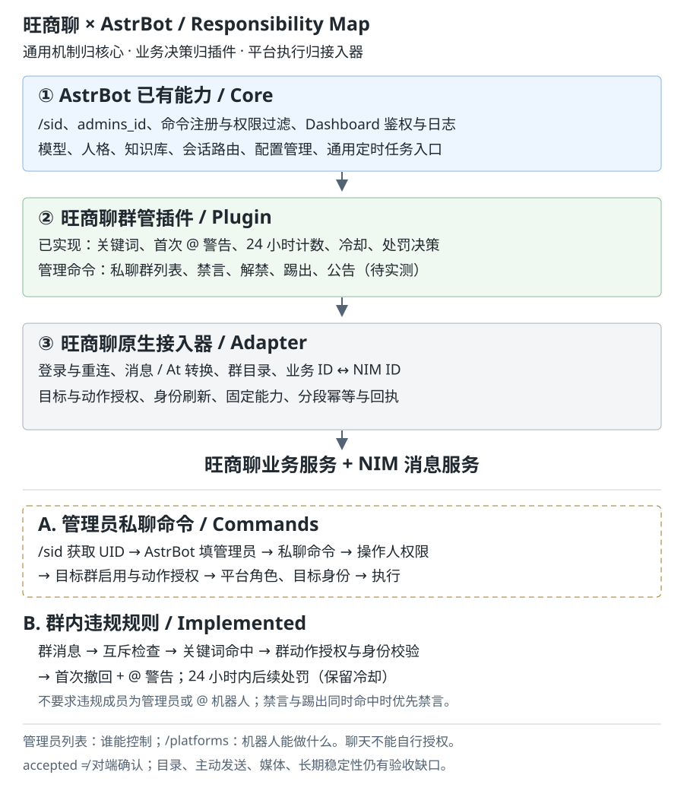

无手工标题的旺商聊对话在列表中使用会话别名／名称兜底；无名称时显示私聊账号或群 ID。不覆盖已有标题，不额外调用模型生成标题。调用追踪断线重连会携带游标，补发仍在缓存内的记录。启用 AstrBot 文件日志及追踪文件后，历史接口可在重启后恢复当前日志文件中的记录：每类读取末尾最多 4 MiB、最多 1000 条，与内存合并后最多返回 2000 条。更早的轮转文件不通过此接口加载；调用追踪不等于全量消息归档。列表、详情与导出使用一致的显示标题，搜索支持会话别名。
窄屏验收：390 像素宽度下长追踪字段完整换行；浏览器断网恢复与服务重启均已验证测试记录回显。
开发测试后端支持独立的 private_ai 范围，用于指定账号的单向普通私聊测试，最多五分钟、十次入站，每条仅允许一次关联回复。此范围不放行斜杠命令，不绕过私聊回复开关，重启后失效；当前尚未增加 Dashboard 范围选项。机器人账号测试不能替代普通外部账号验收。
旺商聊不渲染富文本。群管插件的帮助使用【分区标题】、空行和编号；权限及规则查询使用中文字段。插件为本平台的 AI 请求追加纯文本要求，保留原有人格；普通 AI 结果发送前将 Markdown 转成文本，保留链接地址、代码内容和结构化 @，并关闭该结果的文字转图片。其他平台不受影响。第三方插件直接发送的消息不经过此 AI 结果整理钩子。
本 fork 在 AstrBot 进程内处理旺商聊登录、设备验证、会话恢复与 NIM 收发，使用现有模型、人格和群上下文。每个实例支持选择多个群，支持私信文本自动处理，以及明确提及的群文本回复。无需 Rust 服务、DH 工作台、桥接地址或配对令牌。
accepted 表示服务端接受，不表示对端确认；unknown 不自动重发。媒体、部分群管状态回读、24 小时连续运行及续期验收仍未完成。使用下文源码或 Docker 命令安装。不要复制 Windows EXE、DLL、.pyd 或 macOS 虚拟环境；在目标系统重新安装对应架构的依赖。Linux 路径区分大小写，模型、Node 脚本及配置必须完整部署。
内置组件已采用串行验证、一个模型和一个 Node 工作进程，不沿用独立服务的 30 并发配置。首次验证按需启动，失败回退人工验证。服务器需允许验证码服务与旺商聊服务的网络访问。
Linux 发布前逐项验证：Node 可执行、OpenCV 加载 ONNX、工作进程超时退出、真实登录、保存后连接及重启恢复。当前仓库具备部署入口，不代表 Linux / x86_64 / ARM64 均已完成实测；网络出口变化也可能影响验证结果。
群内被明确提及后的回复自动反 @ 原发送者，不沿用其他目标的 At。违规规则独立于聊天回复开关和提及条件；按群授予动作权限，并分别配置禁言/踢出关键词。两者同时命中只选禁言，不因禁言无权限而改为踢出。
首次违规开启撤回时先尝试撤回，再反 @ 警告；24 小时内第二次及后续违规执行对应处罚。计时从首次违规开始，按机器人/群/成员存入 SQLite，重复消息 ID 不重复计次。处罚保留每群冷却；冷却期仍记录违规并尝试撤回，但不重复处罚。第一次警告不占处罚冷却。
撤回需额外授予“撤回违规消息”并开启撤回开关；只操作触发消息，旧消息缺少路由元数据时拒绝撤回。撤回失败不阻断后续警告/处罚，超时结果不自动重试。踢出、禁言和撤回均要求平台管理角色，不能处罚管理员。受管机器人消息不触发违规规则。关键词自动禁言旧配置升级后改为首次警告，旧 keywords 作为禁言关键词读取。
踢出已通过指定测试账号的成员目录回读确认；撤回已由管理员手机客户端确认三次提示。线上插件还完成了精确临时放行测试；这不代表普通账号完整链路、所有群管动作和长期稳定性均已验收。accepted 不等于状态已回读确认。
uv sync。在 Dashboard 目录运行 pnpm install、pnpm generate:api 和 pnpm build。ASTRBOT_WANGSHANGLIAO_CONFIG，指向服务器上的协议配置 JSON 文件。文件权限在 macOS/Linux 上须为 0600；Windows 使用仅服务账号可读的 ACL。origin（HTTPS 根地址）、headers、metadata（14 个整数）、signing_seed、body_key、message_key、server_key（均为标准 Base64 编码的 32 字节协议密钥）、captcha_id、app_key、device_id。这些值必须由部署管理员提供，不能从算法名称推算。配置缺失时登录返回 deployment_missing，配置不合格返回 deployment_invalid。dashboard/dist；不要只更新 Python 后端而继续使用旧页面。协议配置不进入机器人普通配置，也不通过浏览器接口返回。不要复制旧工作台数据库、密封会话文件或抓包数据。密码仅用于当前登录请求，默认不保存。
私聊发送 /帮助、/help 或 /群管帮助 均可查看旺商聊管理命令说明；群内不展示完整帮助，只提示转私聊。已接入的机器人账号仍需有效开发门禁，管理员身份本身不会绕过机器人互斥。
已完成窄屏保存刷新和实例切换回显验收，保存草稿不会开启门禁。下图为 390px 验收截图中的临时草稿值；测试后已恢复。
私聊测试发送端和接收端共用同一个开发窗口；发送仍需保存的主动发送授权，仅可发送 /群管 命令，不放行普通聊天。关闭、到期或次数耗尽后拒绝新命令。已完成受控机器人私聊目录、编号禁言／解禁、权限拒绝及结果查询实测；处罚状态仍区分服务端接受和最终确认。
群内真实 @ 机器人后，仅支持 /群管 禁言 @成员、解禁 @成员、踢出 @成员、公告 <内容>、全员禁言、解除全员禁言。完整帮助、身份、群列表、成员目录、搜索、规则及结果查询仅限私聊；群内请求只提示转私聊，不展示查询数据。私聊成员列表优先显示群名片，其次显示账号昵称，同时附带编号和业务 ID。
插件已增加 /群管帮助 和 /群管 命令实现：私聊先执行 群列表、选择群 1、成员列表 或 成员搜索 名称，再以成员编号执行禁言、解禁、踢出。编号十分钟有效；帮助与我的权限不要求管理员，其他查询和动作要求 AstrBot 管理员。群内须真实 @ 机器人，并真实 @ 一个目标成员。
已有实例下新增“开发测试门禁”：选择来源实例、群、私聊命令／群内命令／群规则范围，最长 300 秒、最多 10 次入站。群规则关键词必须以 WSL_TEST_ 开头。范围参数随机器人“保存更改”持久化，保存不会开启窗口；另点“开启测试”才临时生效。开启不授予管理员或群管权限；关闭、账号替换、实例停止及重启使窗口失效。刷新后窗口状态重新读取。新命令和新门禁尚待完整线上验收，不将构建通过视为实测通过。

管理员命令已实现，统一使用 /群管 前缀；真实验收与代码实现分开记录。
| 归属 | 负责 | 不负责 |
|---|---|---|
| AstrBot | /sid、管理员列表、命令权限、模型、人格、知识库、会话路由、配置和日志 |
旺商聊协议实现 |
| 群管插件 | 关键词、24 小时计数、警告、处罚决策、私聊和群内管理命令 | 另造管理员绑定、聊天自授权限、直接请求协议 |
| 原生接入器 | 登录、连接、目录、身份映射、标准消息转换、固定动作、授权校验和幂等 | 聊天命令解析、关键词业务决策 |
普通账号私聊 /sid，将 UID 填入 AstrBot 管理员列表；UMO 用于会话路由。该管理员身份可能允许其他 AstrBot 管理命令，并非仅旺商聊群管权限。
管理员命令须依次满足操作人管理员权限、目标群启用、机器人动作授权、平台原生角色和目标身份校验。自动违规规则不要求违规者是管理员，也不要求 @ 机器人；它与普通聊天回复的提及规则分开处理。
/platforms 放实例登录、群选择、回复开关、动作授权和规则参数；规则参数在这里展示，执行仍归插件。管理员列表复用 AstrBot 现有配置。开发者临时放行不能代替任何群管授权。
在 AstrBot 的机器人配置中按群勾选允许的群管动作。600/700 成员等级及聊天群管命令已移除。关键词自动化仅在该群明确授权禁言后执行，机器人仍须具备平台管理权限。
重新登录会停止旧连接，认证仅产生临时会话，必须点击“保存登录并连接”或保存机器人才能恢复消息服务。reauth_required 表示持久化会话失效，需要重新登录并在十分钟内保存；空启用群列表不处理群消息。普通成员机器人可以聊天，但不能执行管理员动作。
接入表单依次排列账号登录、群聊选择和机器人启停操作，按钮沿用 AstrBot 的圆角与主题样式。
旧流程“工作台登录 → 复制桥地址和配对令牌”由“创建机器人 → 旺商聊 → 账号登录”替代。其他平台入口保持原样。
登录事务有效期为十分钟，绑定 Dashboard 用户和预分配的实例 ID。浏览器获得一次性会话引用；保存时才将会话绑定到实例。重复保存同一个已成功提交的引用不会创建第二个实例。
@DH、昵称或账号数字不作为身份依据。只 @ 其他成员不回复，同时明确 @ 多个机器人时各自按配置判断。accepted 不是对端送达。发送超时记为 unknown，不自动补发；中断生成记为 needs_review，不自动重新调用模型。停用后保存配置：关闭连接和处理任务，保留加密恢复会话。退出账号：立即关闭连接并删除本地恢复会话；历史去重与收发账本保留。重新登录会先停止旧连接，验证成功并保存后替换会话。
恢复会话位于 AstrBot 数据目录的 platform_data/wangshangliao/<实例ID的SHA256>/，包含 session.key、session.sealed、messages.sqlite3。密钥与密文同机保存，用来隔离普通配置和防止误泄漏，不提供对主机管理员的保密性。备份该目录时按凭据资料处理。
回退顺序：先停用 AstrBot 旺商聊实例并保存，确认处理任务结束，再恢复旧系统目标群的 AI 配置。不要同时运行两套自动回复。需要删除登录状态时先退出账号；删除机器人配置本身不应被视为凭据擦除操作。
离线测试不使用真实账号：协议合成向量、签名 HTTP 模拟服务、NIM 模拟 WebSocket、登录事务、保存失败回滚、收发去重与 EventBus 等待完成。执行：
uv run pytest tests/test_wangshangliao_wire.py tests/test_wangshangliao_native.py
uv run ruff format .
uv run ruff check .
cd dashboard
pnpm generate:api
pnpm build
node --test tests/*.test.mjs
浏览器复现见 dashboard/tests/wangshangliao.browser.js 和同目录测试夹具，全部注册和保存请求由本地模拟响应处理。
真实验收仍需管理员提供有效协议部署配置、明确的测试账号和群，并确认旧 AI 已停用。应验证普通消息静默、提及一次回复、第二账号确认收件、断线与重启恢复、停用和退出。离线通过不等同于真实平台验收；当前仅在 macOS ARM64 / Python 3.12 上实际运行测试，Windows、Linux、x86_64 待验证。
真实登录前可执行 uv run python scripts/check_wangshangliao.py，只输出部署配置有效性、实例数量和会话绑定状态，不联网、不输出凭据。未就绪时退出码为 1；预检就绪也不表示真实收发验收通过。
旧 Rust 登录配置可以省略 message_key：此时允许账号认证，但实例启动返回 message_key_missing，不会连接消息服务。配置了格式错误的消息密钥仍返回 deployment_invalid。登录成功与收发就绪分别验证。
经管理员明确批准后，已有 Rust 部署协议配置可一次性转换为 AstrBot 独立加密配置，保存在数据目录 platform_data/wangshangliao/deployment/。不导入旧账号会话或密码。未设置 ASTRBOT_WANGSHANGLIAO_CONFIG 时自动加载该配置；显式配置路径优先，路径无效时不会静默回退。回退可停服后移走该目录。
内置求解失败或人工验证失败后可以在同一个验证码弹窗中重试。验证通过后显示“正在向旺商聊提交登录”，此时等待账号认证结果；网络故障和平台拒绝分别提示，不应当显示为滑块验证失败。关闭验证码弹窗后可以重新点击登录。
登录成功后从群聊多选框选择启用群，旧“启用群 ID”手工输入框由群列表替代。普通成员可启用文本回复；群管理操作要求平台管理员权限。绿色提示表示等待滑块验证，红色表示验证失败。
“查看接入教程”从外部文档站改为本机 /local-docs/wangshangliao.html，随 Dashboard 构建生成，无需外网读取。
认证诊断：业务 401 立即进入需要登录，不继续发送无效续期请求；HTTP 429 根据 Retry-After 等待。普通断线采用带抖动的退避重连，仅保留一个定时心跳入口。参考协议尚未确定踢下线原因字段，未知踢下线停止并显示 nim_kicked，避免循环抢占。历史 unsupported 记录未保存类型字段，不能事后确定具体类型；新增记录仅保留格式和原因。
群列表附带权限证据：群主字段或当前账号成员记录；无法确认的角色显示权限未知，不默认赋予普通成员或管理员。仅取得首批成员时不声称角色完整。群与私聊目录明确展示完整性限制，私聊当前仅覆盖本地已知会话。
登录、会话恢复、连接变化、消息处理和发送结果使用 AstrBot 统一日志。日志包含实例、阶段及哈希关联标识，不记录凭据或聊天正文。同类故障按实例生命周期限频为每分钟最多一次，后续日志附带聚合次数。实时页面已验证断线补发、长内容展开及窄屏显示；手机原生客户端显示仍需单独验收。
在 AstrBot 的机器人配置中按群勾选允许的群管动作。600/700 成员等级及聊天群管命令已移除。关键词自动化仅在该群明确授权禁言后执行，机器人仍须具备平台管理权限。
uv run python scripts/wangshangliao_moderate.py --bot BOT_ID --group GROUP_ID --action mute --member MEMBER_ID --operation UNIQUE_ID
默认仅预览，核对后追加 --confirm 执行。动作支持 mute（一分钟）、unmute、mute_all、unmute_all、announce --text 内容。每次新操作使用新的 ID；查询同一次尝试使用原 ID，未知结果不会重发。同 ID 改内容会拒绝。执行前检查当前身份和群角色，不允许管理员处罚管理员。
在 AstrBot 的机器人配置中按群勾选允许的群管动作。600/700 成员等级及聊天群管命令已移除。关键词自动化仅在该群明确授权禁言后执行，机器人仍须具备平台管理权限。
成员目录已统一分页、去重和身份冲突检查；真实大群分页完整性仍需验收。
切换机器人时，群目录自动加载；目录查询失败仍保留已选群 ID。勾选后须点击“保存更改”，未保存时切换会提示放弃更改。页面显示保存状态；在线不等于所有群管动作有权限。
自动回复：在机器人配置中关闭“允许回复私聊”可停止私聊自动回复；群聊可按已启用群单独关闭，开启仍需明确 @。默认保持原有回复行为，关闭不删除历史。
独立短信登录：开始登录后选择“短信登录”，填写 +86 手机号，使用内置求解器或人工回退获取短信验证码，再输入验证码并验证登录。无需密码。实际短信收取仍由用户完成。
同一 AstrBot 中已配置的旺商聊机器人账号自动互相排除（包括停用的实例）。它们的私聊与群消息不会触发彼此的自动回复或关键词群管，私聊发送出口也会阻止向这些账号发送，避免机器人循环对话。
WSL 自动验证默认使用仓库内置求解器，不需要启动 7795 HTTP 服务。 ONNX 模型约 19 MB，随源码部署；首次验证才启动一个本地工作进程，复用模型和一个 Node.js 工作进程。 没有验证请求时不会主动求解。退出 AstrBot 时释放工作进程，超时或取消会终止当前工作进程。
Linux 源码部署需要 Python 3.12+ 和 PATH 中可用的 Node.js，然后执行：
uv sync --extra wsl
uv run --extra wsl main.py
从本仓库构建带认证依赖的 Docker 镜像：
docker build --build-arg INSTALL_WSL=true -t astrbot:wsl .
沿用 AstrBot 的 data 卷和端口配置运行镜像；部署配置和登录会话仍保存在 data 中，不随代码复制。
新服务器需要迁移原有 data 或重新导入 WSL 部署配置并登录。
无需浏览器、GPU、PyTorch 或额外服务端口。
保留 ASTRBOT_YIDUN_SOLVER_URL 兼容设置：未设置或 builtin 使用内置组件，空字符串仅使用人工验证，HTTP URL 使用外部服务。
内置求解器依赖未安装或验证失败时仍回退人工验证；将变量设为空字符串可强制仅使用人工验证。
主动发送须同时打开总开关并选择具体目标；旧配置目标为空，不自动扩大授权。普通回复不使用主动发送授权。成员目录每页最多30人且受字节预算约束，私聊使用 /群管 下一页；编号只对应当前页，十分钟到期。
长回复在纯文本转换和脱敏后分段，每段不超过4096字节。逻辑操作及分段都有稳定ID，未知结果停止后续发送。主动接口接受可选 operation_id，同ID重试查询已有结果；独立调用产生新ID，相同正文可再次发送。GET /api/v1/im/operations/{operation_id}?platform_id=机器人ID 查询结果，不触发重发。服务端接受不等于对端确认。
成员身份不匹配会限频刷新完整目录；单群失败不会阻断其他群与私聊。首次警告明确失败会在下一次先补警告，未知不会盲重发或视为已警告。旧环境变量放行已移除，测试仅使用实例级开发门禁。